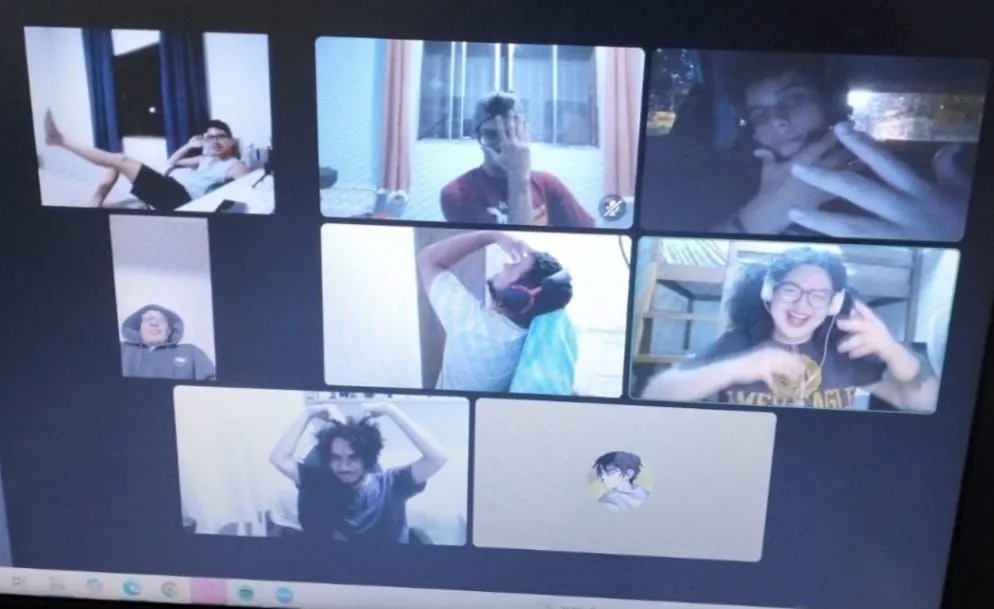

Aqui usamos o foundryvtt
Venha saber as suas vantagens:
- Mapas Interativos.
- Fichas personalizaveis.
- Automatização do combate.
- Efeitos Visuais e Sonoros.
- Rolagens automaticas.
Trilha sonora e efeitos de sons no Void Ninja
Aqui, quando se trata de efeitos, música ambiente e trilha de combate, usamos o Void Ninja, um site que transmite tudo diretamente do meu PC para vocês, sem delay. Pelo uso do Foundry, recomendamos fortemente que o jogador tenha um desktop.
Nosso discord A Grande Taverna
Aqui usamos o Discord para diversas atividades, como jogar, socializar, realizar reuniões e, é claro, para o nosso RPG, onde acontecem as nossas mesas. Portanto, participar dele é obrigatório para jogar com a gente.
Sistemas de RPG
Aqui utilizamos o sistema de D&D 5E, mas também gostamos
de
nos basear em uma filosofia presente no Old Dragon: o
roleplay do jogador tem mais importância do que os
dados, e
a autoridade do mestre está acima do sistema quando
necessário para o bom andamento da narrativa. Se você
está
de acordo com essa proposta, perfeito.
Quanto aos sistemas, não nos limitamos apenas ao D&D 5E.
Gostamos de experimentar diferentes jogos, e cada
história
da minha mesa pode se passar em um sistema distinto, de
acordo com a proposta da campanha e a experiência que
desejamos proporcionar aos jogadores.
Requisitos para Participar
Confira bem os requisitos a baixo
- Um desktop para rodar o Foundry e o Ninja
- Microfone minimamente audível
- Disponibilidade aos sábados has 18hs até no maximo 00hs
- Idade minima 18+
- Respeito com os outros jogadores
- Respeito e limite com o mestre na hora da mesa
- Iniciantes em RPG são muito bem vindos
- Mesa gratuita
Venha fazer parte dessa comunidade
Nesta comunidade, prezamos pela amizade, pela
cordialidade e
respeito ao proximo, independente de sua religião,
orientação, posicionamento político ou crenças pessoais.
Aqui, nosso objetivo não é apenas jogar RPG, mas também
ajudar mestres iniciantes a criarem suas mesas ou até
mesmo
seus próprios mundos. Além disso, buscamos jogar outros
jogos juntos e fortalecer essa experiência de
comunidade.

Nossa comunidade
Como mestre de RPG, me sinto grato por ter jogadores fenomenais, que tornam cada sessão da mesa única, seja pelas piadas, pelo roleplay ou pelos momentos inesquecíveis que criamos juntos. Sem eles, nada disso seria possível. Então, se você quiser fazer parte desta comunidade, já vou avisando: aqui é um verdadeiro manicômio... mas um manicômio muito divertido e acolhedor!
Felipe Caldas Pereira
Sub-Mestre / Jogador Veterano